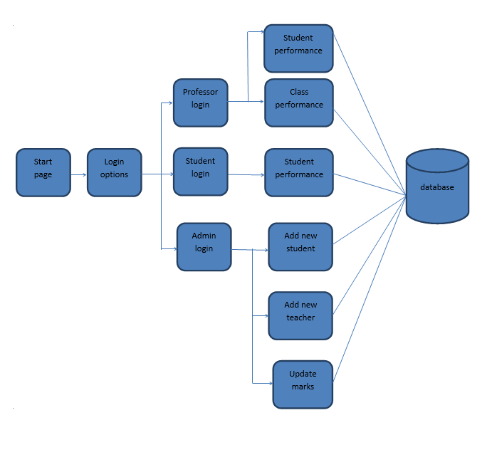
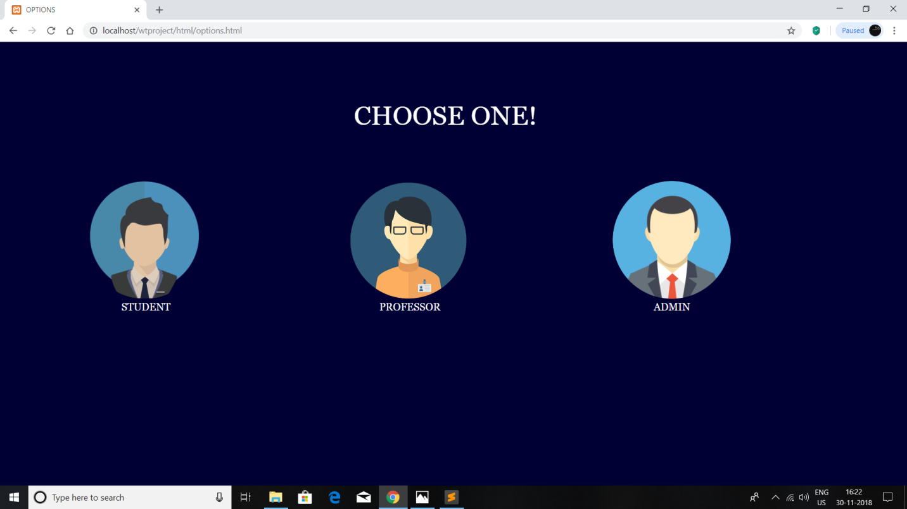
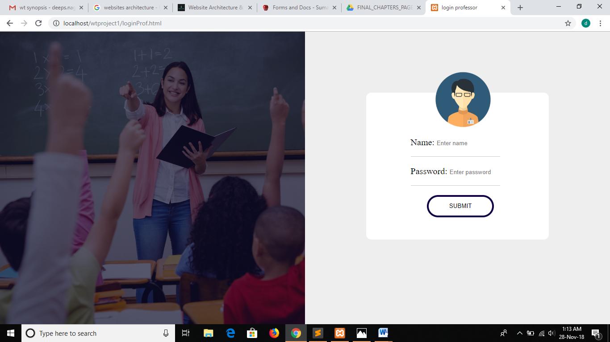
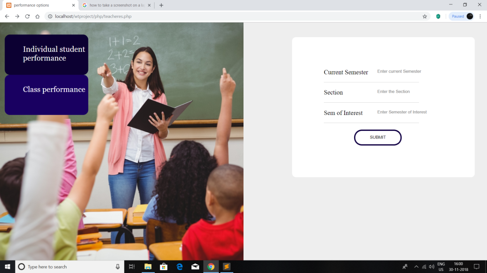
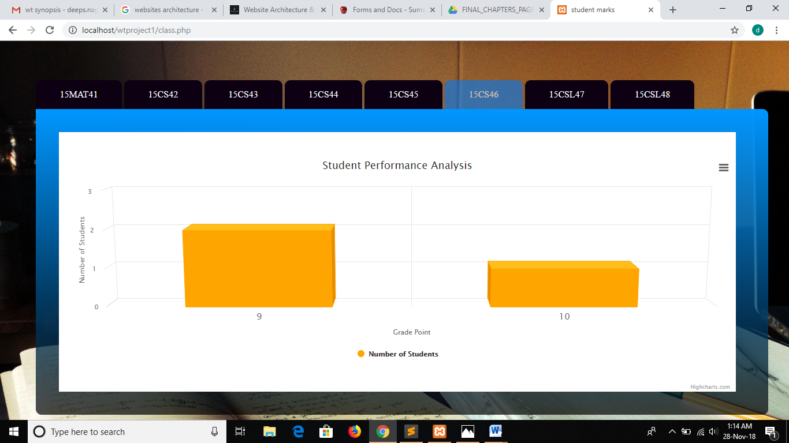
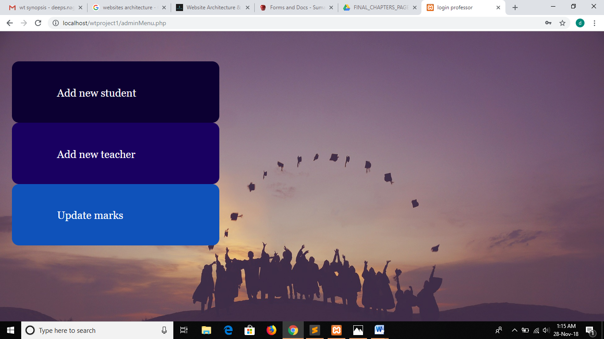
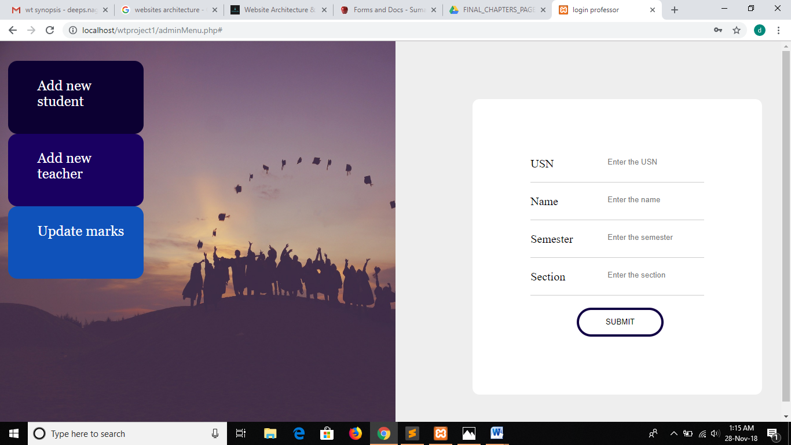
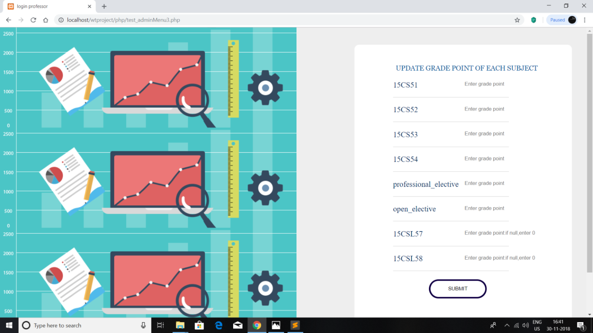

STUDENT PERFORMANCE ANALYSIS SYSTEM
- Project-type:Group Project for the course Web Programming and Applications
- Where: Bangalore Institute of Technology,Bangalore,India
- My Role: Wireframing, Design and Development
WHAT IS THE PROJECT ABOUT?
Student performance analysis is a vast and dynamic process. It is among one of the most widely used database management system, with data additions occurring at an exponential rate. Efficient storage and retrieval of marks are of utmost importance to ensure that no bottlenecks are encountered. The project on Student performance analysis system is a small subjective take on this. The website is a centralized student performance analysis software interface that examines individual student achievement outcomes and provides a comprehensive review of the same. The objective is to present information in easy-to-understand visual dashboards, which can then be used to make benchmark comparisons and gain nuanced insights.
DESIGN-WEBSITE ARCHITECTURE

MAJOR MODULES
- Student Login:This module allows a student to login using his/her USN and obtain a summary of scores throughout the semesters, in addition a graphical representation of the scores is provided for easier comprehension.
- Professor login:This module allows a professor to login to check either individual student performance or class performance. The login id and password are checked up with the database for proper authentication.
- Individual student performance:This module gives a summary of the CGPA obtained in different semesters, along with an option to view the summary in an infographic manner using a bar chart which depicts the semester on the x-axis and CGPA on the y-axis. This page can either be viewed directly by the student or the teacher.
- Class Performance: This module takes as input the current semester and section along with the semester of interest (i.e the current class performance in a particular semester). The page shows a set of tabs one for each subject containing a graphical summary of the number of students who have obtained different grade points in the subject. This module can only be viewed through the Professor login.
- Add new student:This module is used by the admin to add a new student to the database. The page contains a form that asks for student details and is filled in by the admin, which on submit results in addition of a new student.
- Add new teacher: This module is used by the admin to add a new teacher to the database. The page contains a form that asks for Professor details and is filled in by the admin, which on submit results in addition of a new teacher.
- Update marks:This module allows the admin to update the marks of students. On entering the semester and USN a new form s dynamically generated to add the grade points of the student for subjects of that semester. On submit of this form the entered marks details are updated in the database.
FINAL UI








REFLECTION
This project gave me an insight into using HTML5, CSS, Javascript, PHP and JQuery to build complete websites.